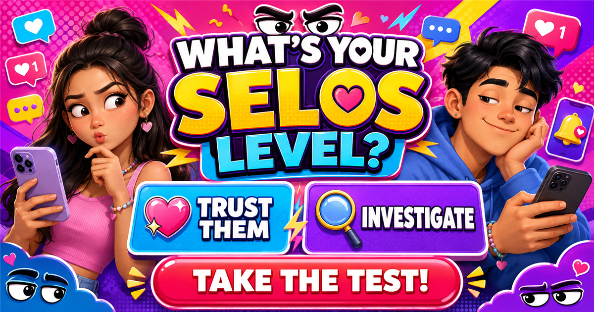

FUN PINOY RELATIONSHIP TEST
What’s Your
Selos
Level?
Trust them or investigate?
Pick your honest reaction to ten familiar love and social-media moments.
PICK YOUR HONEST REACTION
YOUR OFFICIAL SELOS LEVEL

The selos test made for every barkada
A heart reaction, a late reply, one mysterious “just a friend”—small moments can reveal a lot about your selos style.
Choose ten honest reactions to unlock your percentage, your official type, and the result your friends will definitely have opinions about.
How Selos Are You?
A delayed reply. A new follower. A heart reaction. A close friend you have never heard about before.
Some people barely notice these things. Others notice immediately.
What’s Your Selos Level? is a playful Filipino relationship and social-media quiz that turns ten everyday situations into a selos score.
The game is not trying to decide whether jealousy is good or bad. It simply compares the choices you make across different situations and turns them into an entertaining result.
From 0 to 100%
There are ten two-choice questions.
Each choice contributes to your final score, which is displayed on a scale from 0% to 100%. Your score also places you into one of eight playful selos types.
Choose the answers that feel natural rather than trying to force a high or low score. There is no prize for reaching either end of the scale.
The percentage is a game score, not a scientific measurement of jealousy, trust, attachment or relationship compatibility.
Compare Selos Levels
This is the kind of result that can become much more entertaining when two people compare scores.
Send the quiz to your barkada, crush or partner and see what happens.
A different score does not tell you whether somebody is a better friend or partner. It only reflects the answers selected in these ten game situations.
So if your friend gets 90% and you get 20%, you have discovered a difference in quiz answers—not a relationship diagnosis.